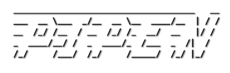

Introduction

**A pipeline framework for python**


 [
[ ]
] ]
] ]
] ]
]Documentation | ChangeLog | Examples | API
Features
- Easy to use
- Nearly zero-configuration
- Nice logging
- Highly extendable
Installation
pip install -U pipen
Quickstart
example.py
from pipen import Proc, Pipen, run
class P1(Proc):
"""Sort input file"""
input = "infile"
input_data = ["/tmp/data.txt"]
output = "outfile:file:intermediate.txt"
script = "cat {{in.infile}} | sort > {{out.outfile}}"
class P2(Proc):
"""Paste line number"""
requires = P1
input = "infile"
output = "outfile:file:result.txt"
script = "paste <(seq 1 3) {{in.infile}} > {{out.outfile}}"
# class MyPipeline(Pipen):
# starts = P1
if __name__ == "__main__":
# MyPipeline().run()
run("MyPipeline", starts=P1)
> echo -e "3\n2\n1" > /tmp/data.txt
> python example.py
06-09 23:15:29 I core _____________________________________ __
06-09 23:15:29 I core ___ __ \___ _/__ __ \__ ____/__ | / /
06-09 23:15:29 I core __ /_/ /__ / __ /_/ /_ __/ __ |/ /
06-09 23:15:29 I core _ ____/__/ / _ ____/_ /___ _ /| /
06-09 23:15:29 I core /_/ /___/ /_/ /_____/ /_/ |_/
06-09 23:15:29 I core
06-09 23:15:29 I core version: 0.15.3
06-09 23:15:29 I core
06-09 23:15:29 I core ╔══════════════════════════════════════════════════════════════════╗
06-09 23:15:29 I core ║ MYPIPELINE ║
06-09 23:15:29 I core ╚══════════════════════════════════════════════════════════════════╝
06-09 23:15:29 I core plugins : verbose v0.12.0
06-09 23:15:29 I core # procs : 2
06-09 23:15:29 I core profile : default
06-09 23:15:29 I core outdir : /home/pwwang/github/pipen/MyPipeline-output
06-09 23:15:29 I core cache : True
06-09 23:15:29 I core dirsig : 1
06-09 23:15:29 I core error_strategy : ignore
06-09 23:15:29 I core forks : 1
06-09 23:15:29 I core lang : bash
06-09 23:15:29 I core loglevel : info
06-09 23:15:29 I core num_retries : 3
06-09 23:15:29 I core scheduler : local
06-09 23:15:29 I core submission_batch: 8
06-09 23:15:29 I core template : liquid
06-09 23:15:29 I core workdir : /home/pwwang/github/pipen/.pipen/MyPipeline
06-09 23:15:29 I core plugin_opts :
06-09 23:15:29 I core template_opts :
06-09 23:15:31 I core
06-09 23:15:31 I core ╭─────────────────────────────── P1 ───────────────────────────────╮
06-09 23:15:31 I core │ Sort input file │
06-09 23:15:31 I core ╰──────────────────────────────────────────────────────────────────╯
06-09 23:15:31 I core P1: Workdir: '/home/pwwang/github/pipen/.pipen/MyPipeline/P1'
06-09 23:15:31 I core P1: <<< [START]
06-09 23:15:31 I core P1: >>> ['P2']
06-09 23:15:31 I verbose P1: size: 1
06-09 23:15:31 I verbose P1: [0/0] in.infile: /tmp/data.txt
06-09 23:15:31 I verbose P1: [0/0] out.outfile:
/home/pwwang/github/pipen/.pipen/MyPipeline/P1/0/output/intermediate.txt
06-09 23:15:33 I verbose P1: Time elapsed: 00:00:02.018s
06-09 23:15:33 I core
06-09 23:15:33 I core ╭═══════════════════════════════ P2 ═══════════════════════════════╮
06-09 23:15:33 I core ║ Paste line number ║
06-09 23:15:33 I core ╰══════════════════════════════════════════════════════════════════╯
06-09 23:15:33 I core P2: Workdir: '/home/pwwang/github/pipen/.pipen/MyPipeline/P2'
06-09 23:15:33 I core P2: <<< ['P1']
06-09 23:15:33 I core P2: >>> [END]
06-09 23:15:33 I verbose P2: size: 1
06-09 23:15:33 I verbose P2: [0/0] in.infile:
/home/pwwang/github/pipen/.pipen/MyPipeline/P1/0/output/intermediate.txt
06-09 23:15:33 I verbose P2: [0/0] out.outfile:
/home/pwwang/github/pipen/MyPipeline-output/P2/result.txt
06-09 23:15:35 I verbose P2: Time elapsed: 00:00:02.009s
06-09 23:15:35 I core
MYPIPELINE: 100%|█████████████████████████████| 2/2 [00:06<00:00, 0.36 procs/s]
> cat ./MyPipeline-output/P2/result.txt
1 1
2 2
3 3
Examples
See more examples at examples/ and a more realcase example at:
https://github.com/pwwang/pipen-report/tree/master/example
Plugin gallery
Plugins make pipen even better.
pipen-annotate: Use docstring to annotate pipen processespipen-args: Command line argument parser for pipenpipen-board: Visualize configuration and running of pipen pipelines on the webpipen-diagram: Draw pipeline diagrams for pipenpipen-dry: Dry runner for pipen pipelinespipen-filters: Add a set of useful filters for pipen templates.pipen-lock: Process lock for pipen to prevent multiple runs at the same time.pipen-log2file: Save running logs to file for pipenpipen-poplog: Populate logs from jobs to running log of the pipelinepipen-report: Generate report for pipenpipen-runinfo: Save running information to file for pipenpipen-verbose: Add verbosal information in logs for pipen.pipen-gcs: A plugin for pipen to handle files in Google Cloud Storage.pipen-cli-init: A pipen CLI plugin to create a pipen project (pipeline)pipen-cli-ref: Make reference documentation for processespipen-cli-require: A pipen cli plugin check the requirements of a pipelinepipen-cli-run: A pipen cli plugin to run a process or a pipeline